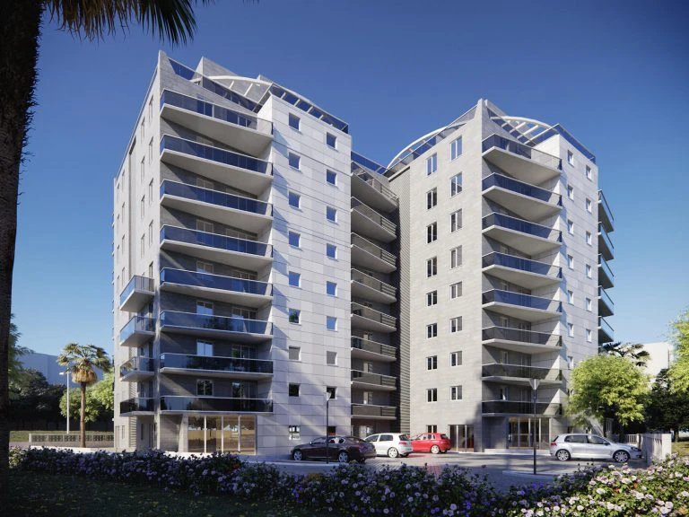
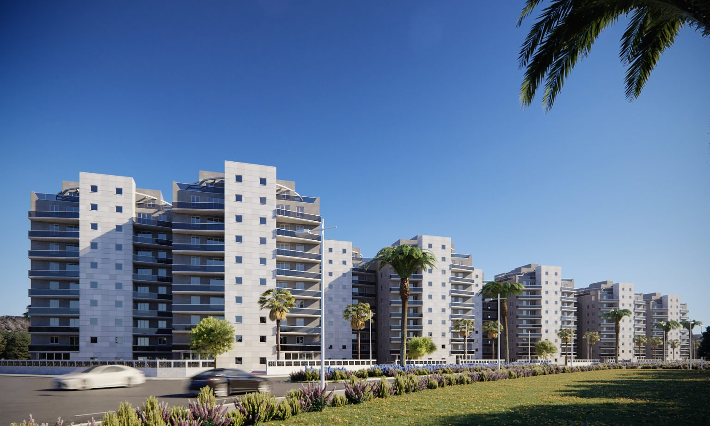

210יח״ד חדשות
180יח״ד מתפנות
יםנוף מלא
פרויקט התחדשות עירונית בשכונת שפירא 12–20 באשקלון, עם דירות חדשות ומודרניות ונוף מלא לים.

שכונה מתחדשת באשקלון במרחק הליכה מהחוף — איכות חיים חדשה לדיירים הוותיקים ולמצטרפים החדשים.

פרויקט התחדשות עירונית בשכונת שפירא 12–20 באשקלון, עם דירות חדשות ומודרניות ונוף מלא לים.
